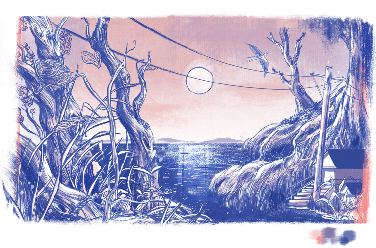

Alice Lee
Hey, Motivarti team + Brian! Thank you for stopping by this page. I previously applied for the Spring mentorship, so you may have seen bits and pieces of this page, but as my portfolio is somewhat diverse, I've presented an edited & separated series of my work here to simplify things. Some of my most recent work and explorations are centered around character design and editorial & product illustrations, and like I mentioned in my application I would love to dive in further into both.

Character explorations
A series of explorations around the relationship between a girl and her grandfather, and their family tradition of folding origami that comes to life together.
Editorial illustrations


Cover for The Progressive, "Building better communities together"
Character-based stories, with a focus on both childrens book illustrations and advertising narratives.
Readers Series: a series on books, and the adventures we go on through reading.

Bells & whistles
Emotional landscapes.
Editorial work with a focus on the fantastical and conceptual.
Interiors.
Graphic novel about a girl's experiences in Chinatown.
Ad campaign & story for Postmates advertising campaign.
Various sketches and paintings from the sketchbook.
Morning painting sessions with the Tonko House crew.
San Francisco views.

Slack Turns Two: painted invitation set for Slack's decadent anniversary party.
Thank you for reading! Please let me know if you have any questions. I also work in the tech industry as an illustrator for various brands (Dropbox, Google, Slack, etc). If you're curious about that work, feel free to check it out here!